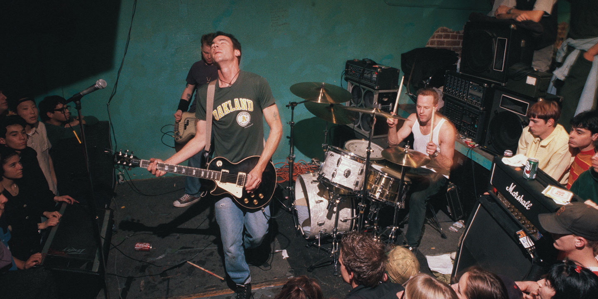

Most diehards see this as emo’s golden era. It is rhetorically tied to white suburbia, middle America, and beta-male masculinity.

EMOCORE
Most diehards see this as emo’s golden era. It is rhetorically tied to white suburbia, middle America, and beta-male masculinity.
As emo shifts toward introspection in the late 80s and early 90s, and because the bands are still mostly cishet white men, what we get are a lot of sad-boy breakup songs. Boys in their basements with their friends wailing about how sad they are because their girlfriend broke up with them. How she’s the source of all pain and everything wrong with the world. How she’s actually just a dumb slut anyway, and I hope she dies. You get the gist.
But even I, the pedantic emo hater, can appreciate that this is a reductive way to sum up the music of a lot of bands over the course of like fifteen years. And obviously they weren’t all writing songs about how bad they wanted to kill their ex-girlfriends. (Brand New was definitely skewing the data, and I can admit that.) It’s just that enough of them were that it created a vibe. The alienation, cognitive dissonance, and outright misogyny experienced by women who participated in second wave emo is well-documented, most famously in Jessica Hopper’s biting essay “Emo: Where the Girls Aren’t.” As she points out, women in second wave emo were either muses for tortured boys or wholly invisible.1 It was male subject, male melancholy, male problems, all the time.

One band from this era that I will mention though before we move on is Jawbreaker: One, because I like them, but more importantly for the impact that their notorious 1995 album Dear You had on third-wave emo bands in the following decade. Dear You is known as the album that broke Jawbreaker, not because the band was unhappy with it, but because their fans hated it so much that the band fell apart within a year of its release. It was too melodic, too produced, too wimpy (everyone’s favorite gender-coded emo insult). Turns out the band was simply ahead of its time—third-wave bands like Fall Out Boy and My Chemical Romance cite Dear You as one of their biggest musical references, and the album’s sonic influence resonates throughout the entire decade. I’m not too proud to admit that I probably just like Dear You because it sounds like could have come out in 2004 alongside Three Cheers for Sweet Revenge. Most of all because Revenge’s second track “Give ‘Em Hell, Kid” is functionally just fanfiction about Dear You’s “Fireman.” Or because MCR hired Rob Cavallo to produce their third album The Black Parade purely on his Dear You credentials.
Fireman, Jawbreaker (1995)
But at the end of the day, they are still in many ways a beta-male 90s emo band. And their songs aren’t all that generous to women, which I grapple with just like all of the other women who have ever loved emo. It’s a lot easier for me to complain about L.A. hardcore or Ian MacKaye than it is to complain about something that’s also a part of me, so this feels like kind of a weird and bittersweet spot to end what mostly felt like a sardonic rant up to this point. Sometimes you’re going to think a little bit too hard about listening to Dear You on an airplane at night and lose your venom. Despite the fact that lyrics like “Sign me to a nice girl / So she can ruin me, eternally” should probably make you kind of angry.
1 Jessica Hopper, “Where the Girls Aren’t,” originally appearing in Punk Planet (2003), accessed at lithub.com/classic-jessica-hopper-emo-comes-off-like-rimbaud-at-the-food-court/.